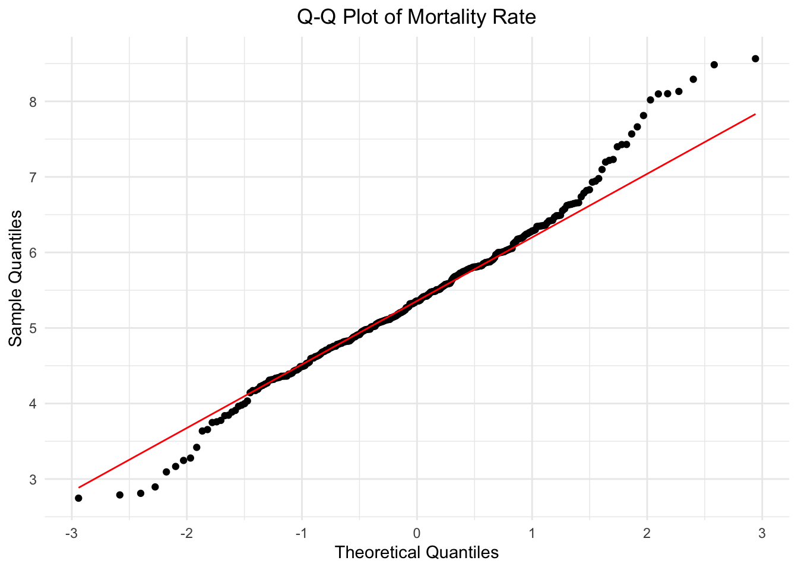
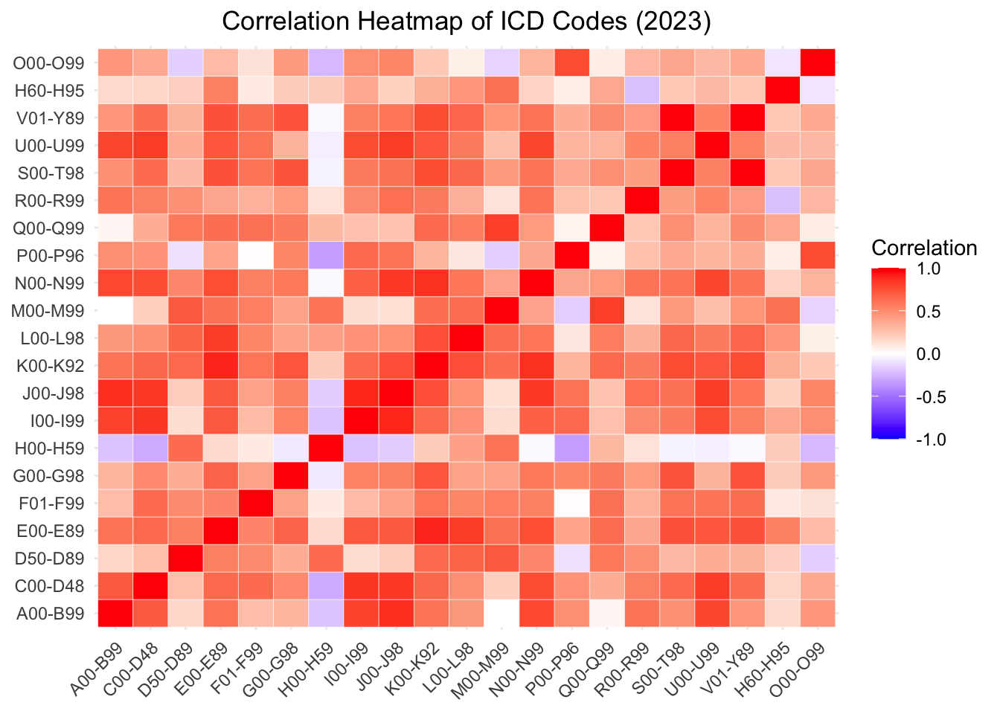

The ICD-10-CM (International Classification of Diseases, Tenth Revision, Clinical Modification) is a standardized system for coding diseases and medical conditions (morbidity data). It is widely used by healthcare providers to document patient diagnoses. The ICD-10-CM builds upon the ICD-10 system, which is utilized globally to code causes of death as recorded on death certificates.
In this analysis, we retrieved the ICD code table from a publicly available webpage. The data was extracted, cleaned, and formatted into a structured table, detailing code ranges, chapters, and diagnosis types utilized in our study.
# Reading web page content and grab the table
url <- "https://en.wikipedia.org/wiki/ICD-10"
webpage <- read_html(url)
icd_table <- webpage %>%
html_table(fill = TRUE) %>%
.[[2]]
# Generate a clean df and draw the table
icd_code_df <- as.data.frame(icd_table) %>%
select(-Chapter) %>%
rename(
`Code Range` = Block,
` Chapter Title` = Title
)
icd_code_df %>%
gt() %>%
tab_header(
title = "ICD-10-CM diagnosis chapter and code range"
) %>%
cols_width(
`Code Range` ~ px(120)
) %>%
tab_options(table.font.size = "small")| ICD-10-CM diagnosis chapter and code range | |
| Code Range | Chapter Title |
|---|---|
| A00–B99 | Certain infectious and parasitic diseases |
| C00–D48 | Neoplasms |
| D50–D89 | Diseases of the blood and blood-forming organs and certain disorders involving the immune mechanism |
| E00–E90 | Endocrine, nutritional and metabolic diseases |
| F00–F99 | Mental and behavioural disorders |
| G00–G99 | Diseases of the nervous system |
| H00–H59 | Diseases of the eye and adnexa |
| H60–H95 | Diseases of the ear and mastoid process |
| I00–I99 | Diseases of the circulatory system |
| J00–J99 | Diseases of the respiratory system |
| K00–K93 | Diseases of the digestive system |
| L00–L99 | Diseases of the skin and subcutaneous tissue |
| M00–M99 | Diseases of the musculoskeletal system and connective tissue |
| N00–N99 | Diseases of the genitourinary system |
| O00–O99 | Pregnancy, childbirth and the puerperium |
| P00–P96 | Certain conditions originating in the perinatal period |
| Q00–Q99 | Congenital malformations, deformations and chromosomal abnormalities |
| R00–R99 | Symptoms, signs and abnormal clinical and laboratory findings, not elsewhere classified |
| S00–T98 | Injury, poisoning and certain other consequences of external causes |
| V01–Y98 | External causes of morbidity and mortality |
| Z00–Z99 | Factors influencing health status and contact with health services |
| U00–U99 | Codes for special purposes |
For clarity, upcoming charts will use ICD codes instead of lengthy diagnosis types. For more details on specific types or chapter titles, please refer to this table or hover over the chart.
death_by_chapters <- read_delim("data/Provisional Mortality Statistics by Chapter per Year.txt",
delim = "\t", quote = "\"",
col_names = TRUE, show_col_types = FALSE)
death_by_chapters <- death_by_chapters %>%
separate(`Residence Census Region`,
into = c("Census Region Code", "Region"), sep = ":", remove = TRUE) %>%
mutate(`Census Region Code` =gsub("Census Region ", " ", `Census Region Code`)) %>%
select(-c(`Notes`, `Census Region Code`, `Year`)) %>%
rename(
Region_Code = `Residence Census Region Code`,
State = `Residence State`,
ICD_Chapter = `MCD - ICD Chapter`,
ICD_Code = `MCD - ICD Chapter Code`,
Year = `Year Code`,
Deaths_Count = `Deaths`,
Pop = `Population`,
Crude_Rate_per_100k = `Crude Rate`
) %>%
clean_names()
# With 2024 data incomplete, we focus on 2018–2023 and calculate the mortality rate per 1,000 people.
death_by_chapters <- death_by_chapters %>%
filter(year >= 2018 & year <= 2023) %>%
mutate(rate_per_1000 = (deaths_count / pop) * 1000)
# Calculate the average number of deaths per chapter from 2018 to 2023
avg_death_by_icd <- death_by_chapters %>%
group_by(icd_chapter, icd_code) %>%
summarise(avg_death_per_year = mean(deaths_count, na.rm = TRUE), .groups = "drop") %>%
mutate(percentage_proportion = avg_death_per_year / sum(avg_death_per_year) * 100) %>%
arrange(desc(percentage_proportion))
# Create simply dataset by grouping diseases with less than 2% of deaths as "Other"
avg_death_by_icd_simply <- avg_death_by_icd %>%
mutate(
icd_code = ifelse(percentage_proportion < 2, "Other", icd_code),
icd_chapter = ifelse(percentage_proportion < 2, "Other", icd_chapter)
) %>%
group_by(icd_code, icd_chapter) %>%
summarise(avg_death_per_year = sum(avg_death_per_year), .groups = "drop") %>%
mutate(percentage_proportion = avg_death_per_year / sum(avg_death_per_year) * 100)
# Group "Other"
avg_death_by_icd_other <- avg_death_by_icd %>%
filter(avg_death_per_year < 0.02 * sum(avg_death_per_year))To make the pie chart more readable, chapters with a death
proportion of less than 2% are categorized as “Other”. However,
they may still hold some analytical value.
These chapters include:
1. D50-D89: Diseases of the blood and blood-forming
organs and certain disorders involving the immune mechanism
(1.30%).
2. M00-M99: Diseases of the musculoskeletal system and
connective tissue (0.89%).
3. L00-L98: Diseases of the skin and subcutaneous
tissue (0.41%).
4. Q00-Q99: Congenital malformations, deformations, and
chromosomal abnormalities (0.21%).
5. P00-P96: Certain conditions originating in the
perinatal period (0.17%).
6. H00-H59: Diseases of the eye and adnexa
(0.04%).
7. O00-O99: Pregnancy, childbirth, and the puerperium
(0.03%).
8. H60-H95: Diseases of the ear and mastoid process
(0.02%).
Next, we created the pie chart shown below.
# Create the pie chart
plot_ly(
avg_death_by_icd_simply,
labels = ~icd_code,
values = ~avg_death_per_year,
type = 'pie',
textinfo = 'label+percent',
hoverinfo = 'text', # Enable custom hover text
text = ~paste("ICD Code:", icd_code,
"<br>ICD Chapter:", icd_chapter,
"<br>Average Deaths:", round(avg_death_per_year, 2))
) %>%
layout(
title = "Proportion of Average Deaths by Chapter for 2018-2023",
legend = list(
title = list(text = "Chapter"),
yanchor = "top",
xanchor = "left",
orientation = "h", # Horizontal legend
x = 0, # Push legend to the side
y = -0.3,
font = list(size = 10), # Adjust font size
traceorder = "normal" # Sort legend entries
)
)Based on the chart, the top five chapters contributing to the average
deaths from 2018–2023 are:
1. I00–I99: Circulatory system diseases
(22.6%).
2. J00–J98: Respiratory system diseases
(11.6%).
3. F01–F99: Mental and behavioral disorders
(9.18%).
4. C00–D48: Neoplasms (9.15%).
5. E00–E89: Endocrine, nutritional, and metabolic
diseases (7.92%).
The pie chart above shows how different ICD chapters contributed to average deaths between 2018 and 2023, with circulatory system diseases and respiratory system diseases being the most significant. To complement this analysis, the bar charts below further dissect the total and average deaths by ICD chapter across different regions.
region_colors <- c("#376795", "#72BCD5", "#FFD06F", "#E76254")
# Prepare the data for the grouped bar chart
grouped_bar_data_total <- death_by_chapters %>%
group_by(icd_chapter, icd_code, region) %>%
summarise(total_deaths = sum(deaths_count, na.rm = TRUE), .groups = "drop")
grouped_bar_data_avg <- death_by_chapters %>%
group_by(region, year, icd_chapter, icd_code) %>%
summarise(avg_death = mean(deaths_count, na.rm = TRUE), .groups = "drop")
# Create the grouped bar chart for total deaths
plot_total_deaths <- plot_ly(
grouped_bar_data_total,
x = ~icd_code,
y = ~total_deaths,
color = ~region,
colors = region_colors,
type = 'bar',
hovertemplate = paste(
"ICD Chapter: %{x}<br>",
"Total Deaths: %{y}<extra></extra>" # <extra></extra> removes the secondary box
),
showlegend = FALSE
) %>%
layout(
barmode = 'group', # Set to group mode
title = "Total Deaths by ICD Chapter and Region",
xaxis = list(title = "ICD Chapter", tickangle = -45),
yaxis = list(title = "Total Deaths"),
legend = list(
title = list(text = "Region"),
orientation = "h",
x = 0.1,
y = -0.3
)
)
# Create the grouped bar chart for average deaths
plot_avg_deaths <- plot_ly(
data = grouped_bar_data_avg,
x = ~icd_code,
y = ~avg_death,
color = ~region,
colors = region_colors,
type = 'bar',
hovertemplate = paste(
"ICD Chapter: %{x}<br>",
"Total Deaths: %{y}<extra></extra>" # <extra></extra> removes the secondary box
)
) %>%
layout(
title = "Average Deaths by ICD Chapter and Region",
xaxis = list(title = "ICD Chapter", tickangle = 45),
yaxis = list(title = "Average Deaths"),
barmode = 'group', # Grouped bar chart
legend = list(title = list(text = "Region"))
)
# Combine both plots into a single column
combined_plot <- subplot(
plot_total_deaths, plot_avg_deaths,
nrows = 1,
shareX = FALSE,
titleY = TRUE,
titleX = TRUE
) %>%
layout(
title = "Total and Average Deaths by ICD Chapter and Region",
margin = list(t = 50, b = 50)
)
# Display the combined plot
combined_plotThe chart on the left shows the total number of deaths, highlighting the overall burden of specific ICD chapters in each region. In this view, regions with larger populations or higher disease prevalence stand out more. The second chart focuses on the average yearly deaths, standardizing the data to show annual burden, which reduces but does not eliminate the impact of population size.
Both charts emphasize the importance of the “Circulatory System” chapter, reflecting its significant contribution to mortality rates across regions. Other chapters, like “Respiratory System,” also show consistently high death rates. Both charts reveal that deaths in the southern regions remain consistently higher, potentially due to population size, health disparities, or resource allocation issues.
The grouped bar charts above provide an absolute view of total and average annual deaths across regions. However, for ICD chapters with lower death counts, the grouped bar charts may not effectively highlight their regional patterns. To address this, we created stacked bar charts as a complementary visualization. These charts present the proportional contribution of each region to the total or average deaths for a given category, offering a clearer and more intuitive comparison.
The left chart shows total deaths by region and ICD code, while the right chart displays the average annual deaths.
# Prepare the data for the stacked bar chart
stacked_data_total <- death_by_chapters %>%
group_by(icd_chapter, icd_code, region) %>%
summarise(total_deaths = sum(deaths_count, na.rm = TRUE), .groups = "drop") %>%
group_by(icd_code) %>%
mutate(percentage = total_deaths / sum(total_deaths) * 100)
stacked_data_avg <- death_by_chapters %>%
group_by(region, icd_code, icd_chapter) %>%
summarise(avg_deaths = mean(deaths_count, na.rm = TRUE), .groups = "drop") %>%
group_by(icd_code) %>%
mutate(percentage = avg_deaths / sum(avg_deaths) * 100)
# Create the percentage stacked bar chart
# Total
staked_bar_total <- plot_ly(
stacked_data_total,
x = ~icd_code,
y = ~percentage,
color = ~region,
colors = region_colors,
type = 'bar',
hovertemplate = paste(
"ICD Chapter: %{x}<br>",
"Total Deaths: %{y}<extra></extra>" # <extra></extra> removes the secondary box
),
showlegend = FALSE
) %>%
layout(
barmode = 'stack',
title = "Percentage Stacked Bar Chart of Deaths by ICD Code and Region",
xaxis = list(title = "ICD Code", tickangle = -45),
yaxis = list(title = "Percentage", ticksuffix = "%"),
legend = list(
title = list(text = "Region"),
orientation = "h", # Horizontal legend
x = 0,
y = -0.2
)
)
# Average
staked_bar_avg <- plot_ly(
data = stacked_data_avg,
x = ~icd_code,
y = ~percentage,
color = ~region,
colors = region_colors,
type = 'bar',
hovertemplate = paste(
"ICD Chapter: %{x}<br>",
"Total Deaths: %{y}<extra></extra>" # <extra></extra> removes the secondary box
)
) %>%
layout(
barmode = 'stack',
title = "Percentage Stacked Bar Chart of Average Deaths by ICD Code and Region",
xaxis = list(title = "ICD Code", tickangle = -45),
yaxis = list(title = "", showticklabels = TRUE),
legend = list(
title = list(text = "Region"),
orientation = "h",
x = 0.1,
y = -0.3
)
)
# Combine both plots into a single column
combined_staked_bar <- subplot(
staked_bar_total, staked_bar_avg,
nrows = 1,
shareX = FALSE,
titleY = TRUE,
titleX = TRUE
) %>%
layout(
title = "Percentage Stacked Bar Charts of Deaths by ICD Code and Region",
margin = list(t = 50, b = 50)
)
# Display the combined plot
combined_staked_barThe total deaths chart highlights overall regional contribution, such as the South’s larger share, while the average deaths chart focuses on per-year patterns, providing a clearer view. By averaging the data, the right chart reduces the impact of annual fluctuations or outliers seen in the total deaths chart, offering a more consistent perspective on mortality trends.
To account for differences in total population across regions, which can influence the number of deaths, we will analyze mortality rates instead. This approach provides a more balanced perspective, allowing for a clearer comparison of death rates across regions and ICD chapters, highlighting whether certain chapters differ significantly across regions when population size is taken into account.
# Group and summarize the data
grouped_usa_rate <- death_by_chapters %>%
group_by(icd_chapter, icd_code, year) %>%
summarise(avg_rate_per_1000 = mean(rate_per_1000, na.rm = TRUE), .groups = "drop")
plot_ly(
grouped_usa_rate,
y = ~icd_code,
x = ~avg_rate_per_1000,
color = ~as.factor(year),
colors = "Set2",
type = "bar"
) %>%
layout(
title = "Grouped Bar Chart of Average Mortality Rate by ICD Chapter",
xaxis = list(
title = "ICD Chapter",
tickangle = -45
),
yaxis = list(title = "Average Rate per 1000"),
barmode = "group",
legend = list(
title = list(text = "Year"),
orientation = "h",
x = 0,
y = -0.2
)
)# Function to create a grouped bar chart using plotly
create_grouped_bar_chart <-function(data, title, showlegend = TRUE){
plot <- plot_ly(
data,
x = ~icd_code,
y = ~avg_rate_per_1000,
color = ~region,
colors = region_colors,
type = 'bar',
text = ~paste("ICD Chapter:", icd_chapter), # Add the ICD Chapter to the hover text
hovertemplate = paste(
"ICD Code: %{x}<br>",
"%{text}<br>", # Use the `text` attribute for the ICD Chapter
"Total Deaths: %{y}<extra></extra>" # <extra></extra> removes the secondary box
),
showlegend = showlegend
) %>%
layout(
title = paste("Average Mortality Rate by ICD Chapter and Region", title),
xaxis = list(title = "ICD Chapter", tickangle = -45),
yaxis = list(title = "Mortality Rate per 1000"),
barmode = 'group', # Grouped bar chart
legend = list(
title = list(text = "Region"),
orientation = "h", # Horizontal legend
x = 0.1,
y = -0.2
)
)
return(plot)
}# Group and summarize the data
grouped_region_rate <- death_by_chapters %>%
group_by(icd_chapter, icd_code, region) %>%
summarise(avg_rate_per_1000 = mean(rate_per_1000, na.rm = TRUE), .groups = "drop")
create_grouped_bar_chart(grouped_region_rate, "(2018-2023)")# Group and summarize the data
grouped_region_rate_1819 <- death_by_chapters %>%
filter(year %in% c(2018, 2019))%>%
group_by(icd_chapter, icd_code, region) %>%
summarise(avg_rate_per_1000 = mean(rate_per_1000, na.rm = TRUE), .groups = "drop")
# Group and summarize the data
grouped_region_rate_20to23 <- death_by_chapters %>%
filter(year >= 2020 & year <= 2023) %>%
group_by(icd_chapter, icd_code, region) %>%
summarise(avg_rate_per_1000 = mean(rate_per_1000, na.rm = TRUE), .groups = "drop")
gbc_before <- create_grouped_bar_chart(grouped_region_rate_1819, "(2018-2019)", showlegend = FALSE)
gbc_after <- create_grouped_bar_chart(grouped_region_rate_20to23, "(2020-2023)")
# Combine both plots into a single column
gbc_compared <- subplot(
gbc_before, gbc_after,
nrows = 1,
shareX = FALSE,
shareY = TRUE,
titleY = TRUE,
titleX = TRUE
) %>%
layout(
title = "*",
margin = list(t = 50, b = 50)
)
# Display the combined plot
gbc_comparedcsd_data <- death_by_chapters %>%
filter(icd_code == "I00-I99") %>%
select(state, year, rate_per_1000)
# Create a box plot to show distribution
plot_ly(
data = csd_data,
x = ~year,
y = ~rate_per_1000,
type = "box",
boxpoints = "all",
jitter = 0.3, # Add some jitter to the points
pointpos = -1.8, # Adjust the position of points
text = ~paste(
"State:", state, "<br>",
"Year:", year, "<br>",
"Rate per 1000:", rate_per_1000
),
hoverinfo = "text"
) %>%
layout(
title = "Mortality Rate of the Circulatory System Disease(I00-I99) per Year",
xaxis = list(title = "Year"),
yaxis = list(title = "Rate per 1000")
)# Conduct a normality test
norm_test <- shapiro.test(csd_data %>% pull(rate_per_1000))We conducted the Shapiro-Wilk normality test on the csd data to evaluate whether the mortality rate follows a normal distribution. The p-value is r round(0.001), which is far smaller than the commonly used significance level of 0.05.
This leads us to reject the null hypothesis that the data follows a normal distribution. The data is likely not normally distributed and may exhibit skewness or kurtosis. We can validate this through the Q-Q plot.
ggplot(csd_data, aes(sample = rate_per_1000)) +
stat_qq() +
stat_qq_line(color = "red") +
ggtitle("Q-Q Plot of Mortality Rate") +
xlab("Theoretical Quantiles") +
ylab("Sample Quantiles") +
theme_minimal() +
theme(plot.title = element_text(hjust = .5))
This Q-Q plot (quantile-quantile plot) compares the sample quantiles of the mortality rate data against the theoretical quantiles of a normal distribution.
Data points closely aligned with the red diagonal line suggest that these parts of the data are approximately normally distributed. However, the points deviate significantly from the red line at both ends (tails), indicating that the data has heavier tails than expected under a normal distribution. The deviations are particularly noticeable at extreme quantiles
Therefore, we will use the Wilcoxon test to investigate whether there is a significant difference in csd mortality rates between 2019 and 2021.
# Since p-value = 0.001035 < 0.05, reject the normality hypothesis
wil_test <- wilcox.test(rate_per_1000 ~ year, data = csd_data %>% filter(year %in% c(2019, 2021)))Since the p-value(1.220915^{-6}) is far below 0.05, we reject the null hypothesis. This suggests that there is a statistically significant difference in mortality rates between the 2019 and 2021.
data_2023 <- death_by_chapters %>%
filter(year == 2023) %>%
select(icd_code, state, rate_per_1000)
# Reshape to wide format (rows: state, columns: icd_code, values: rate_per_1000)
wide_data_2023 <- data_2023 %>%
pivot_wider(names_from = icd_code, values_from = rate_per_1000)
# Remove rows with missing values
wide_data_2023_clean <- wide_data_2023 %>% select(-state) %>% na.omit()
# Calculate the correlation matrix
correlation_matrix <- cor(wide_data_2023_clean, use = "complete.obs")
correlation_matrix_melt <- melt(correlation_matrix)
# Plot the heatmap
ggplot(correlation_matrix_melt, aes(x = Var1, y = Var2, fill = value)) +
geom_tile(color = "white") + # Create the heatmap with white gridlines
scale_fill_gradient2(low = "blue", high = "red", mid = "white", midpoint = 0,
limit = c(-1, 1), space = "Lab",
name = "Correlation") + # Define the color scale
theme_minimal() + # Use a minimal theme
theme(
axis.text.x = element_text(angle = 45, vjust = 1, hjust = 1), # Rotate x-axis labels
axis.title.x = element_blank(), # Remove x-axis title
axis.title.y = element_blank(), # Remove y-axis title
plot.title = element_text(hjust = .5)
) +
labs(title = "Correlation Heatmap of ICD Codes (2023)")